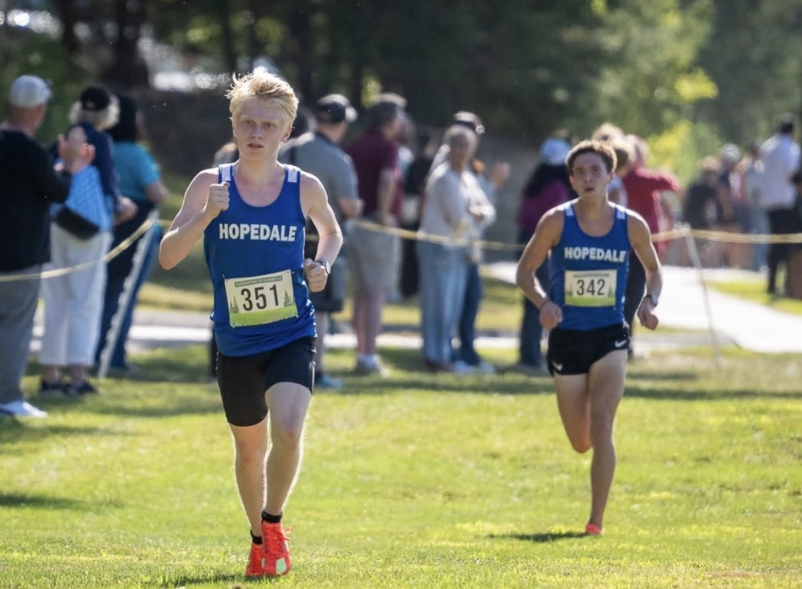
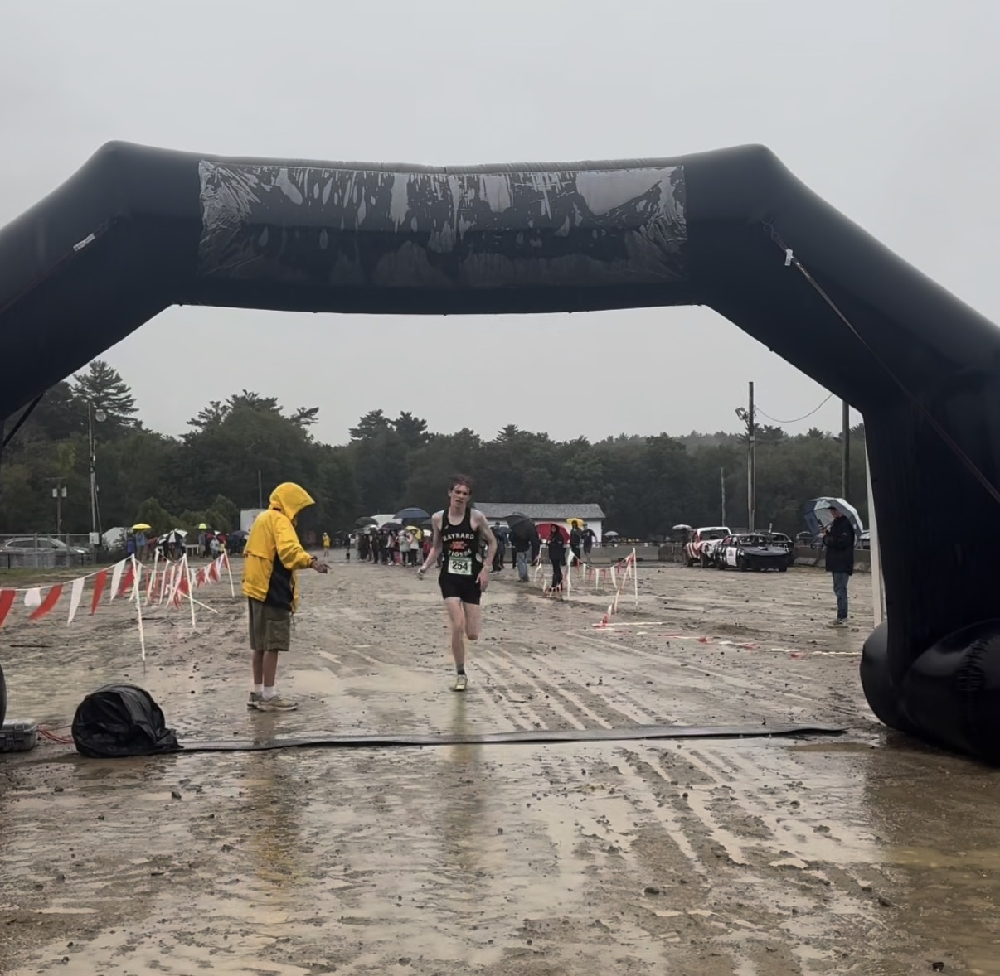
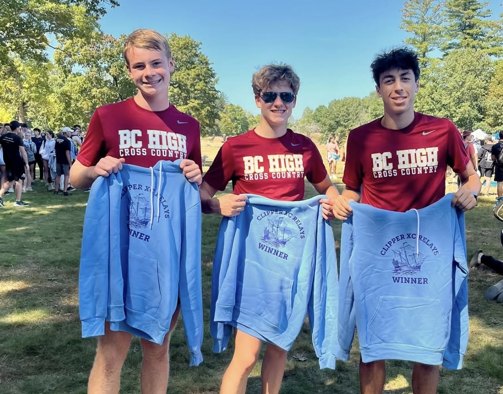
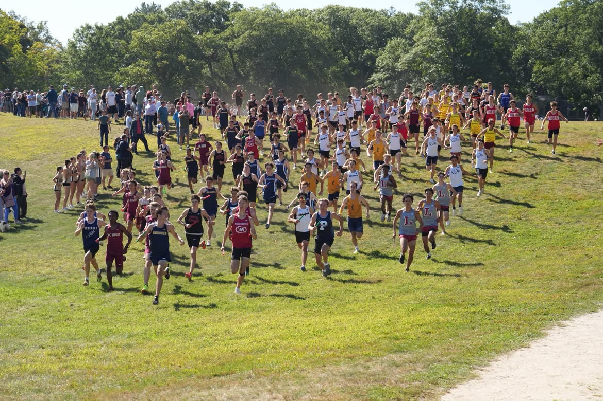
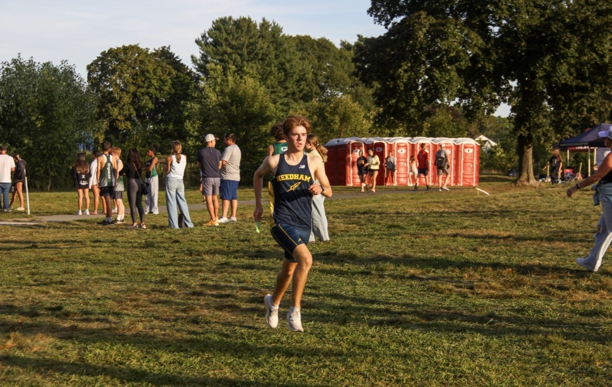
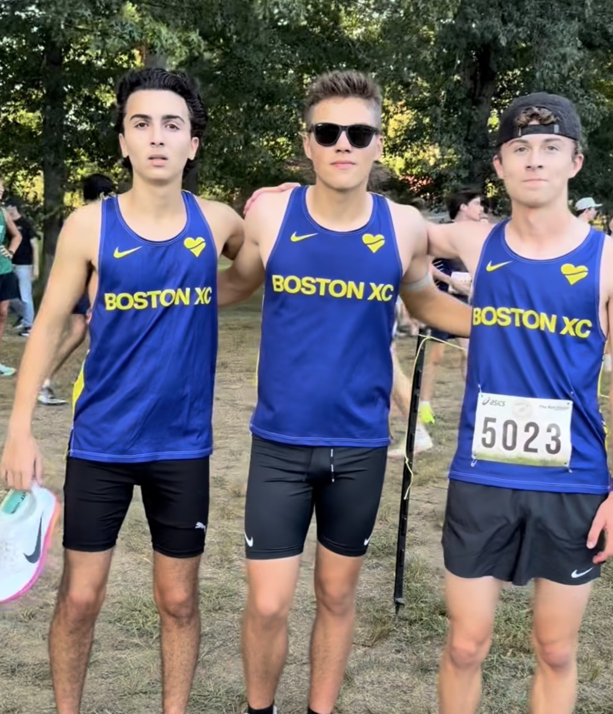

Ted Dutkiewicz Memorial Invite
Yes, we doubt this course was an actual 5K, and we are still going to count Ryan Costello (15:52) as having the current MA #1 5K. Outside of the times, though, there are still a couple of important takeaways from this meet.
Granby’s Trevor Sullivan (14:30) was the overall winner of the day. He’s coming off a spring season where he placed 6th in the freshman two-mile at New Balance Nationals, earning All-American honors. The biggest surprise, though, was how much he gapped second place. Evan Hedlund (14:51) is the current #1 returner for Division 3 this year, and Sullivan beat him by over 20 seconds. If Sullivan decides to compete through the MIAA this year, he could very well have one of the best shots at becoming the Division 3 State Champion.
Highland Park Invitational
The biggest upset of the week has to go to the Hopedale boys, who defeated #15 Catholic Memorial 60–101. Although Catholic Memorial sat their #2 runner, the Hopedale boys still outperformed expectations.
After being one of the fastest freshmen in the state last year, Quinn Cook (16:09) had a great opener, leading his squad and placing 2nd overall. After that, Ben Stone (17:03) and Connor Fitzgibbon (17:05) finished 11th and 12th. Cedric Arthur (17:28) and Jack Murphy (17:32) rounded out the squad with 18th- and 19th-place finishes.
Watch out for Hopedale come November. Even though they have a small school size, that doesn’t mean they can’t compete with some of the top teams in the state.

Marshvegas Classic
Maynard’s Konrad Schluter won the meet individually with a new PR of 15:58. Greater Lowell Tech’s Mathew Guerin (16:15) placed second individually and led his team to a first-place finish overall. Behind Guerin was a pack of three Greater Lowell runners: Ethan Levesque (16:47), Timothy Sullivan (17:00), and Patrick Sullivan (17:03).
The JV race was also a major point of interest. Plymouth South took the top four spots while placing two more runners in the top seven. Their first four runners all finished within six seconds of each other, showing off some serious depth.

Clipper Relays
Although we couldn’t find the full results for the meet, we do know a few things about what went down at the front. In one of our recent articles, we talked about how Billerica could have one of the best 1–2 punches in the state. They backed that up by winning this relay meet against some of the top teams in Massachusetts. Mason Niles, Sahil Ghandi, and Dylan Kane combined for the win.
North Andover also had one of the most impressive performances of the meet. They entered the weekend a little under the radar but completely outperformed expectations, placing teams 2nd, 6th, and 8th overall. Having three separate relay squads finish inside the top eight shows just how much depth North Andover has throughout its roster. While their top group finishing runner-up was impressive on its own, the performances from their second and third groups could be an even bigger sign of what this team is capable of later in the season. North Andover is definitely a team to keep an eye on moving forward.
#2 Lexington placed 4th overall, while #6 BC High came together to upset #4 St. John’s Prep. Colin Kurtz, Joseph Hayes, and Theo Weiss placed 3rd overall, while the boys from St. John’s Prep finished 7th. This is especially important considering one of BC High’s top runners, Owen Geagan, didn’t compete.
Things are getting heated inside the Catholic Conference, and we’ll finally get some answers when both teams fully face off on September 22.


MSTCA XC Relays
The boys from Boston Latin Academy came away with the win at this meet. We’ve talked about this team a couple of times and how their biggest strength is their top-end talent. Brandon Spiess, Adam Kramer, and Nate Iliff combined to run 23:02, averaging 5:00 pace over 4.6 miles.
If BLA can solve its depth problem, it will once again be in the hunt for another Division 2 crown. #13 Parker Charter (23:19) finished runner-up, while honorable mention Amherst-Pelham (23:44) finished 3rd overall.

